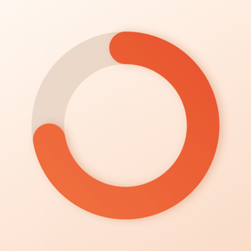
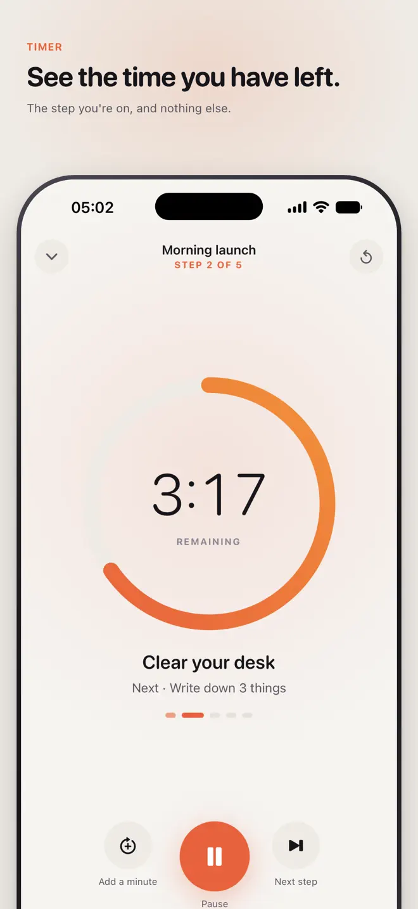
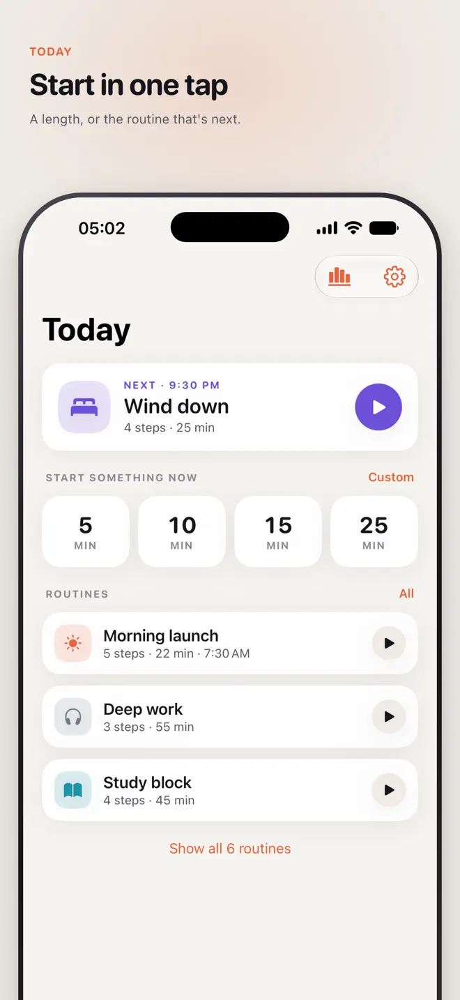
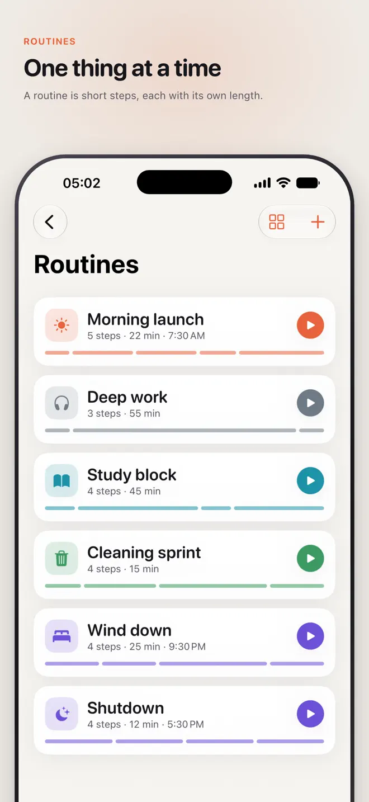
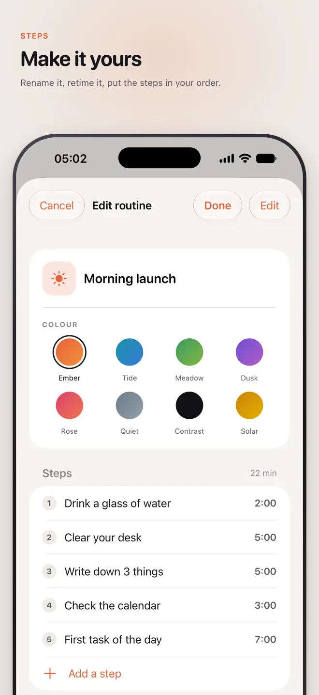

See the time you have left.
Focal turns a countdown into something you can look at: a colored disk that shrinks as your time runs out — the same idea as the timer on a classroom wall, in your pocket. A routine is a chain of short steps; Focal shows you the one you are on and nothing else.
iPhone and Android · No internet needed · No account


What it does
Built for the way attention actually works
A timer you can see
Full-screen countdown in three shapes: disk, bar or pie.
One thing at a time
A routine is a chain of short steps, each with its own length. Focal moves to the next one by itself.
Ready-made routines
Morning launch, shutdown, cleaning sprint, a study block — start with ten or build your own.
Gentle nudges
Haptics at the halfway mark and in the final minute. When time is up the clock keeps counting, and Focal taps you again at five and fifteen minutes.
Add a minute
Extend the step without losing your place.
Eight themes
Including a high-contrast theme and a quiet monochrome one.
On iPhone
Time you can see, everywhere
How it works
For when “five more minutes” quietly becomes an hour


Your data
No internet needed
- No account. No cloud.
- Nothing you make leaves your phone.
- Works in airplane mode, because the timer never needed the internet.
Questions
Before you download
What is a visual timer?
A timer that shows the time left as a shape instead of only digits. In Focal it is a colored disk, bar or pie that shrinks as your time runs out.
Is Focal designed for ADHD?
It is designed around time blindness: one step on screen at a time, gentle haptics at the halfway mark and the final minute, and a nudge at five and fifteen minutes after time is up.
Can I chain timers into a routine?
Yes. A routine is a chain of short steps, each with its own length, and Focal moves from one to the next by itself.
Does the timer show on the lock screen?
On iPhone, yes — as a Live Activity on the Lock Screen and in the Dynamic Island, and as a desk timer in StandBy.
Does Focal need an account or internet?
No. There is no account and the timer works in airplane mode.
Which devices and languages does Focal support?
iPhone (iOS 18 or later) and Android. The app is available in 25 languages: English, Arabic, Bengali, Chinese (Simplified and Traditional), Dutch, French, German, Hindi, Indonesian, Italian, JV, Japanese, Korean, Polish, Portuguese, Punjabi, Russian, Spanish, Swedish, Thai, Turkish, Ukrainian, Urdu, Vietnamese.
- Made for
- People with ADHD or time blindness, students, parents and anyone who works better with a visual timer
- Platforms
- iPhone (iOS 18 or later) · Android
- Languages
- 25, including English, Arabic, Bengali, Chinese (Simplified and Traditional), Dutch, French
- Category
- Productivity
- Developer
- Ho Van Dai
- Page updated